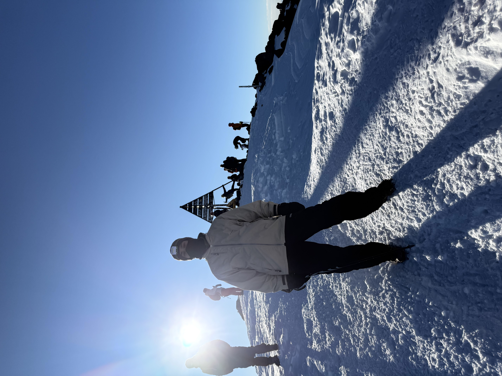

Note: I made this guide mainly for me as a way to record the information that I
do not want to forget. As a result; I may and will skip over information that may be crucial to first
timers, and I won't cover every aspect.
I would recommend doing your own research and watching this YouTube video.
When climbing mount , you pass four main points:
,
,
the ,
and finally the itself.
The journey can be broken into three main stages:
Arrive in Imlil to rent equipment, hire a guide, and optionally spend the night there or in
.
Start early from for the 6-hour hike to the Toubkal Refuge and stay overnight.
Begin another early ascent from the refuge to the summit (about 5 hours), then descend all the way
back to Aremd or Imlil (7–8 hours).
First stage
The journey starts in Imlil, a touristic village (meaning it has restaurants
and kiosks) that you can reach
from Marrakesh. The taxis from Marrakesh directly to Imlil are in an area called Sidi mimoun, more
specifically
here .
And they cost 35 DH. Alternatively, and even better depending on how you look at it, from the same place,
you can take a taxi to Asni (a small city on the way
to Imlil) for 15 DH and then a mini-bus to Imlil for 7.5 DH. The taxis to Asni gets filled quicker.
Once you are in Imlil, you should rent the equipment you'll need (which obviously depends on the season) and
find a guide that you'll go with. Being accompanied by a guide along side identifying yourself (having a
CIN) is mandated by the gendarmerie whose check point is on the route, more specifically
here .
The experience I had with the guide Mostapha (contact information are at the bottom) was more than good, I
would recommend him. More than that, if you don't count transportation of getting to Marrakech, he is
cheaper than agencies by a considerable amount (1400 DH
vs 1800 / 1900 DH on average).
The rest for the time being
Alright, I have no time to write this properly and so the rest, for now, is just bullet points:
The hike from Armed to the Refuge is chill, you will just be walking a lot that's it. No need to
wear everything and prepare as if you are climbing K2.
If you rent clothes or have extra luggage; mules are there that cary your stuff from Armed to the
refuge and back from refuge to Armed. This is included in Mostapha's plan and I'm guessing in all
other agencies plans.
If you are extra tired when coming back from the summit, you can ride a mule's back on the way back
from the refuge to Armed. Just talk with your guide. They cost 200 DH and I would recommend it even
if you are not ired. Those mules 🫏 are goated 🐐!
Here is the equipment I rented for 300 DH during my winter ascent (23.11.2025):
Softshell pants
Hiking boots
Crampons
One Trekking pole
Hardshell jacket
Headlamp
Thick gloves
Warm beanie
and I brought with me and wore a thermal layer, a fleece jacket, thermal pants, gloves, 3 socks,
and a face mask. Since these equipments are rented, and some of them cannot be washed, hundred of
people have worn what you are going to wear, so it is crucial to wear something of your own that
separates your skin from the clothes.
I think that the boots I rented were just simple boots, as that they provided no real protection
from the cold weather. I would recommend buying your own
sturdy boots and then just attaching crampons to them. Maybe these boots
that the Luke from the Outdoor Boys recommended? The gloves are also as important. I did the
mistakes of renting gloves that were tight. That, I think, cut the circulation to my arm. I think
some thick shell mitts would've done the job. I would also recommend an ice axe over
trekking poles if you can be safe with one. Plus you can sit on it.
I would highly recommend you bring extra clothes that you can change in when you get to the refuge
in the first hike. That way you can shower (in semi warm shower) and spend the evening comfortably.
You don't need a sleeping bag for warmth in the refuge, if you are sleeping in a room with 20 other
peoples, it will get really warm. Do not, however, forget to bring ear plugs like I did. People
snore and cough. A lot.
When you get to the refuge, try and sleep early, as that the ascent usually happens at 3 AM.
You leave your stuff behind in the refuge as you ascend, you only take a bottle of water with you
and some little snacks. Dates maybe. I would say around 1.5L of water should be good. I took a
small 0.5L bottle with me and I regretted it. Do ration your water, however, even if you bring 1.5L.
As long as you are moving, you wouldn't feel cold, buy you would of course get tired (AF) and feel
some sort of dizziness because of the altitude. My feet and hands however were frozen. I stopped
feeling my right toes and both of my hands. That's why I'd recommend buying your own sturdy shoes,
or maybe it was just the boots from that person I rented from. More on him later. Two weeks after
the ascent I still had zero feeling in my right toes, and until now as I'm writing this (around a
month later) I barely started feeling something. My hands are fine now however.
If you are an on and off sport type of guy like me, you would definitely wish that you were on
your on phase the 2 months or so before you ascend.
So that you wouldn't get pranked like we all were, after hours and hours of ascending with nothing
near in sight, you will eventually get to a nice place where the sun will start rising, and just to
your left you would think that that's the summit. Hahahahaha, it is not my boy. You still have
around 30-45 mins of hiking to do.
When I got to the top, I was so exhausted, so out of breath, that I just sat down, and thought I was
going to pass out. I drank almost all the water I had left and ate all my dates. And just sat there
dizzy. I wasn't able to enjoy the view. Even 15 minutes later, I was still so tired that I
couldn't appreciate the beautiful dotted mountains around me. I would recommend bring 1.5L of water
as I said, a good amount of dates, and to be well prepared physically before you go.
Going back down is easier as that you aren't fighting against gravity, oxygen increases, the sun
should be up by now and providing warmth. But it still is a long way down, and you still need to
watch out to your steps and in places where the guide tells you to.
When you get back to the refuge, you eat lunch, and get going back to Armed. Most other agencies, I
think, have you back on the transportation bus after that to go home. I stayed an extra night at
Mostapha's for 150 DH (this time with no dinner or breakfast), where I took a really good hot shower
and slept well.

Me, not really enjoying it. Fucking hating it at that moment. But glad, now, that I at least took this cool
picture.
Contact information
So, Mostapha the guide that I went with has two brothers. One, called Mohammed,
which owns the hostel I stayed at the first night as a I got to Imlil. And another, called Said, that rents
equipment. Top tier family business. Anyhow, as I said, my experience with Mostapha was more than good. I
would go with him again and stay at his brothers' hostel again. But, I wouldn't rent equipment from Said
again. It has nothing to do with the guy, he was friendly, and he even took me using his motorbike from his
shop in Imlil to his brothers' hostel in Armed. But that footwear he gave me, oh no. Boy, I had 3 socks
on!!! Now that I'm thinking about it, I did accidentally dip my right foot in a little puddle of water on my
way to the refuge, maybe that was the cause? But my socks got dry after that, I don't know. More over, the
crampons were kind of detaching every now and then, which is to be expected considering they were worn
hundred of times... Anyhow, Mostapha and Mohammed's services were great, and that dinner when I got to Armed
was AMAZING and boiling hot, just what you need in that weather!
This is Mostapha's number, you "contract" with him directly and he handles the rest concerning staying at
his brother's hostel, the refuge, the food along the way, ext:
.
Speaking of food, I forgot to mention that my trip with Mostapha for 1400 DH included a really good
and fulfilling dinner, staying at the hostel in Armed, breakfast, lunch on the route to the refuge, evening
snack at the refuge, dinner at the refuge, staying at the refuge, breakfast there, lunch again, the mules
that carry your stuff, and of course him guiding along the way.
His brother Mohammed's hostel in Armed is located here
. And Said's shop that I wouldn't recommending getting the shoes,
crampons, and gloves from (the rest did its job) is located here in Imlil.